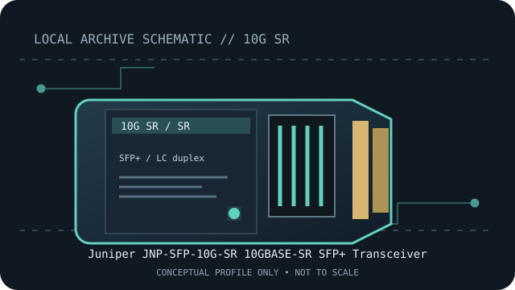

[ MODEL-SPECIFIC NETWORK HARDWARE RECORD ]
Juniper JNP-SFP-10G-SR 10GBASE-SR SFP+ Transceiver
Juniper-qualified 850nm short-reach 10GbE SFP+ optic. Exact PID, host qualification and optical channel specifications should be checked before deployment.

IDENTIFICATION: Match the module label, vendor part number and revision to the manufacturer's documentation. Nominal link rate and maximum reach are specifications, not measured throughput or a guarantee for every installed channel.
Model-specific specifications and compatibility
| Subcategory | SFP transceivers: optical and copper |
|---|---|
| Exact product/model | Juniper JNP-SFP-10G-SR 10GBASE-SR SFP+ Transceiver |
| Form factor | SFP+, hot-pluggable 10GbE optical transceiver; Juniper PID JNP-SFP-10G-SR. |
| Optical interface | 10GBASE-SR at 850nm over multimode fiber. |
| Nominal rate (not measured) | 10Gb/s nominal Ethernet link rate. |
| Wavelength and reach | Up to 300m on OM3 MMF or 400m on OM4 MMF, subject to the qualified channel and host. |
| Connector and fiber type | Duplex LC; 850nm multimode fiber (MMF). |
| Host coding and compatibility caveat | Juniper qualification is platform-, PIC/port- and software-specific. Check JNP-SFP-10G-SR in Juniper’s Hardware Compatibility Tool and qualified-optics documentation for the exact chassis and release. Other vendors’ coding or a standards-matched SFP+ cage does not establish Juniper support. |
| Variant / deployment caveat | This JNP-coded module is a distinct PID from the existing Juniper EX-SFP-10GE-SR record. Confirm the physical part number and HCT result rather than assuming suffixes or product families are interchangeable. |
| Measured throughput | No bench result is claimed. Actual payload throughput depends on the host, link partner, protocol overhead and test method. |
Host qualification and installation notes
Juniper qualification is platform-, PIC/port- and software-specific. Check JNP-SFP-10G-SR in Juniper’s Hardware Compatibility Tool and qualified-optics documentation for the exact chassis and release. Other vendors’ coding or a standards-matched SFP+ cage does not establish Juniper support.
This JNP-coded module is a distinct PID from the existing Juniper EX-SFP-10GE-SR record. Confirm the physical part number and HCT result rather than assuming suffixes or product families are interchangeable.
Check both endpoint modules, fiber grade, polarity, connector cleanliness and host port configuration. Verify the exact transceiver PID and revision against the current manufacturer compatibility source before placing the link in service.
Archival, ESD and fiber-safety notes
Record the exact PID, hardware revision, host port, firmware/software release and available digital optical diagnostics. Store the module in ESD-safe packaging with dust caps fitted. Never look into an active fiber or transceiver aperture.
Manufacturer sources
- Juniper 10G/1G Qualified OpticsJuniper qualified product-family page for 10G optics.
- Juniper Optic Modules Data SheetOfficial Juniper technical data for optical module specifications.
- Juniper Hardware Compatibility ToolSearch the exact PID against chassis, interface and Junos release.
Manufacturer compatibility varies by host, release, module coding and product revision. Consult the exact product source and current host qualification before use.